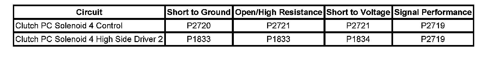
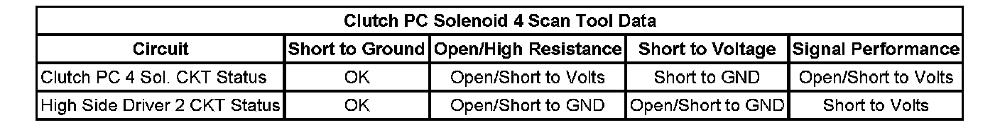

P2721
DTC P2719, P2720 or P2721
DTC Descriptors
DTC P2719
Clutch Pressure Control (PC) Solenoid 4 System Performance
DTC P2720
Clutch Pressure Control (PC) Solenoid 4 Control Circuit Low Voltage
DTC P2721
Clutch Pressure Control (PC) Solenoid 4 Control Circuit High Voltage
Diagnostic Fault Information
Perform the Diagnostic System Check - Vehicle prior to using this diagnostic procedure. Initial Inspection and Diagnostic Overview


Circuit/System Description
The clutch pressure control (PC) solenoid 4 is part of the control solenoid (w/body and TCM) valve assembly and is not serviced separately. The TCM supplies 12 volts to the clutch PC solenoid 4 through the high side driver 2 circuit. The TCM control the clutch PC solenoid 4 through the clutch PC solenoid 4 control circuit. The normally low clutch PC solenoid 4 flows fluid to the 2-6 clutch when commanded ON and exhausts fluid when commanded OFF. The clutch PC solenoid 4 regulates the transmission fluid pressure to the 2-6 clutch.
Conditions for Running the DTC
^ The engine run time is greater than 5 seconds.
^ The clutch PC solenoid 4 is commanded ON or OFF.
Conditions for Setting the DTC
DTC P2719
The TCM detects an internal electrical performance malfunction of the clutch PC solenoid 4 control circuit and the actual 2-6 clutch pressure does not equal the commanded 2-6 clutch pressure for 300 milliseconds.
DTC P2720
The TCM detects an internal low voltage electrical malfunction of the clutch PC solenoid 4 control circuit for 300 milliseconds.
DTC P2721
The TCM detects an internal high voltage electrical malfunction of the clutch PC solenoid 4 control circuit for 300 milliseconds.
Action Taken When the DTC Sets
^ DTCs P2719, P2720, and P2721 are Type A DTCs.
^ The TCM defaults the transmission to a limited shift pattern utilizing 2 forward gears and reverse based on the default detected.
^ The TCM commands maximum line pressure.
^ The TCM freezes transmission adaptive functions.
Conditions for Clearing the DTC
DTCs P2719, P2720, and P2721 are Type A DTCs.
Diagnostic Aids
When attempting to set solenoid electrical DTCs, ensure the TCM is warmed up and the transmission is operated in second gear long enough to ensure a 3° C (5° F) increase in TCM substrate temperature. This will place the TCM under the optimal conditions to test solenoid electrical DTCs.
Reference Information
Schematic Reference
Automatic Transmission Controls Schematics
Connector End View Reference
^ Automatic Transmission Inline 16-Way Connector End View
^ Automatic Transmission Internal Connector End Views
^ Automatic Transmission Related Connector End Views
DTC Type Reference
^ Diagnostic Trouble Code (DTC) Type Definitions
^ Diagnostic Trouble Code (DTC) List/Type
Electrical Information Reference
^ Circuit Testing
^ Connector Repairs
^ Testing for Intermittent Conditions and Poor Connections
^ Wiring Repairs
Circuit Verification
Perform the following procedure to place the control solenoid (w/body and TCM) valve assembly under the optimal conditions to test solenoid electrical DTCs.
1. Ensure the transmission fluid temperature is between 50-80° C (122-176° F).
2. Operate the vehicle in second gear long enough to ensure at least a 3° C (5° F) rise in TCM substrate temperature.
Component Testing
The scan tool data parameter Clutch PC 4 Sol. CKT Status normally displays OK.
If the parameter displays Open/Short to Volts or Short to GND or if the DTC resets, perform the Control Solenoid Valve and Transmission Control Module Assembly Inspection and if no concerns are found, replace the control solenoid (w/body and TCM) valve assembly. Control Solenoid Valve and Transmission Control Module Assembly Inspection
Repair Instructions
Perform the Diagnostic Repair Verification after completing the diagnostic procedure. Verification Tests
1. Replace the control solenoid (w/body and TCM) valve assembly. Refer to Control Module References for replacement, setup, and programming. Programming and Relearning
2. Perform the Service Fast Learn Adapts. Programming and Relearning